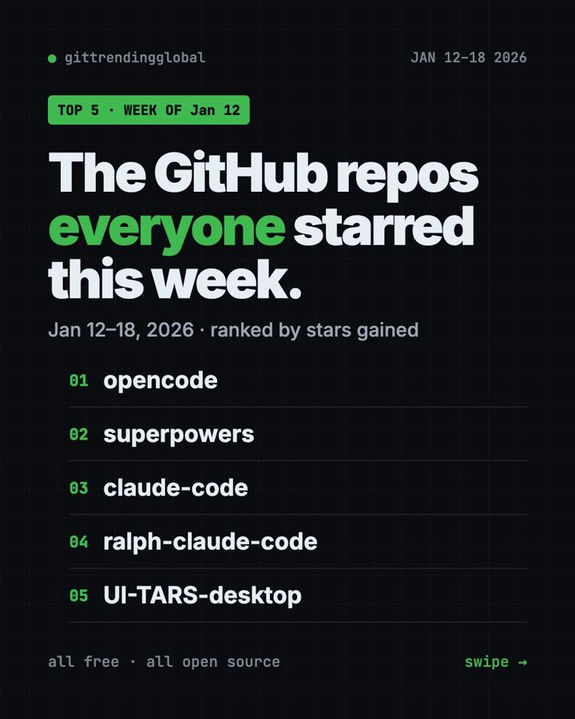
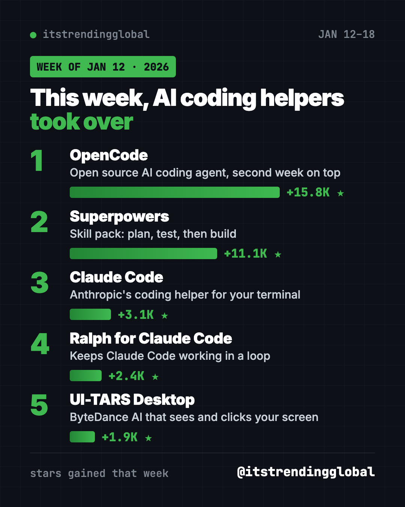
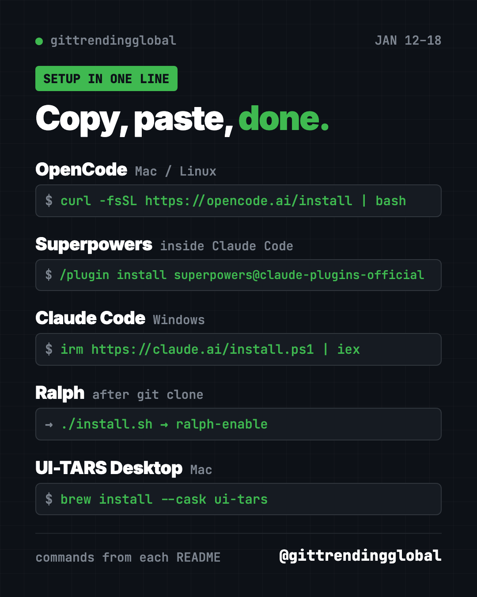

Home › Top repos › GitHub trending this week
Top GitHub Repos, Week of January 12, 2026
Top GitHub repos week of January 12, 2026: OpenCode, Superpowers, Claude Code, Ralph and UI-TARS Desktop, explained in plain words with setup.

The top GitHub repos week of January 12, 2026 were all about AI that writes code or uses your computer. OpenCode held first place for a second week, and Superpowers jumped from fifth to second.
Here is what each project does, in plain words, plus the copy-paste line to try it. A "star" on GitHub is like a bookmark, so the numbers show what people were excited about.
Key takeaways
- OpenCode gained about 15,800 stars, even more than the week before.
- Superpowers quadrupled its pace, from 2,600 to 11,100 new stars.
- Claude Code stayed in the top three with about 3,100 new stars.
- Ralph keeps Claude Code working in a loop until a job is truly done.
- UI-TARS Desktop from ByteDance can look at your screen and click for you.
Top GitHub repos week of January 12, 2026 compared
| Rank | Repo | Stars gained | In one line | Cost |
|---|---|---|---|---|
| 1 | OpenCode | +15.8K | Open source AI coding helper | Free (MIT), model may cost |
| 2 | Superpowers | +11.1K | Makes AI helpers plan and test | Free (MIT) |
| 3 | Claude Code | +3.1K | Anthropic's coding helper | Needs a Claude plan |
| 4 | Ralph for Claude Code | +2.4K | Runs Claude Code in a loop | Free (MIT) |
| 5 | UI-TARS Desktop | +1.9K | AI that uses your mouse and keyboard | Free (Apache-2.0) |
Star gains cover January 12 to 18, 2026. Totals were checked on GitHub on October 16, 2026.

1. OpenCode: still number one
Stars: +15.8K this week · about 214K total today
What it is: OpenCode is a free AI coding helper you run on your own computer. You can plug in the AI model you like. A built-in "plan" mode only reads your files and asks before running commands, which makes it a safe way to explore.
Who it's for: Students and tinkerers who want to see how an AI coding helper works without a subscription to one brand.
One everyday use: Ask it to add a "dark mode" button to a small personal website.
Install it: Mac or Linux users can copy and paste this:
curl -fsSL https://opencode.ai/install | bash
Windows users can use scoop install opencode or download the desktop app.
Set up OpenCode from https://github.com/anomalyco/opencode and walk me through switching between build and plan mode.
2. Superpowers: the habit coach for AI helpers
Stars: +11.1K this week · about 300K total today
What it is: Superpowers is a set of skills that change how an AI helper works. It asks questions first, writes a short spec, and makes a step-by-step plan. Then it builds with tests, which are small checks that prove the code works. The README says agents can work on their own for a couple of hours without going off track.
Who it's for: People who use Claude Code, Codex, Cursor or Gemini CLI and want fewer messy surprises.
One everyday use: Ask for a simple habit tracker app and watch it plan before it builds.
Install it: Inside Claude Code, paste this:
/plugin install superpowers@claude-plugins-official
In the Codex app, click Plugins and add Superpowers from the Coding section.
Use Superpowers to plan a small habit tracker web page with me. Ask questions before writing any code.
See Superpowers on GitHub · Read our full Superpowers guide
3. Claude Code: steady demand
Stars: +3.1K this week · about 151K total today
What it is: Anthropic's AI helper that works in your terminal and inside code editors. You describe a task, and it reads your project, edits files and explains what changed. It is free to download but needs a paid Claude plan or API account.
Who it's for: Claude subscribers who want help with real files, not only chat.
One everyday use: "Rename all my holiday photos by date taken."
Install it: On Windows, paste this into PowerShell:
irm https://claude.ai/install.ps1 | iex
On Mac or Linux, use curl -fsSL https://claude.ai/install.sh | bash.
Install Claude Code from the official instructions at https://github.com/anthropics/claude-code and check that it starts.

4. Ralph for Claude Code: keep going until it's done
Stars: +2.4K this week · about 9.7K total today
What it is: Ralph runs Claude Code again and again on the same project, so it keeps working through a task list. It is based on a technique by Geoffrey Huntley, named after Ralph Wiggum. Ralph knows when to stop. It needs two signs that the work is finished. It also limits itself to 100 calls an hour by default, so it does not burn through your plan.
Who it's for: Claude Code users with a long to-do list who want it to run overnight.
One everyday use: Hand it a checklist of ten small fixes and check the results in the morning.
Install it: Copy and paste this once:
git clone https://github.com/frankbria/ralph-claude-code.git
cd ralph-claude-code
./install.sh
Then go to your project folder and run ralph-enable.
Install Ralph from https://github.com/frankbria/ralph-claude-code, enable it in this project, and do a dry run first.
See Ralph for Claude Code on GitHub
5. UI-TARS Desktop: an AI that uses your computer
Stars: +1.9K this week · about 39K total today
What it is: UI-TARS Desktop is a free app from ByteDance. You type an instruction, and an AI model looks at your screen and moves the mouse and keyboard for you. It works on Mac and Windows, and can also drive a browser.
Who it's for: Curious people who want to see "computer use" AI in action.
One everyday use: "Open my browser and find the latest open issue on this project's GitHub page."
Install it: Download it from the releases page, or on a Mac paste this:
brew install --cask ui-tars
On a Mac you must allow Accessibility and Screen Recording in System Settings.
Install UI-TARS Desktop on my Mac from https://github.com/bytedance/UI-TARS-desktop and guide me through the permission settings.
⚠️ Heads up: An app that controls your mouse can click the wrong thing. Watch it work, keep private tabs closed, and use it on one screen only, as the guide says.
Which one should you try first?
- Never used an AI coding helper? Start with OpenCode. It is free and has a safe plan mode.
- Your AI helper writes sloppy code: add Superpowers.
- You already pay for Claude: get Claude Code, then try Ralph for long task lists.
- You just want to be amazed: watch UI-TARS Desktop click around your screen.
FAQ
What were the top GitHub repos the week of January 12, 2026?
OpenCode, Superpowers, Claude Code, Ralph for Claude Code and UI-TARS Desktop gained the most stars from January 12 to 18.
What is the difference between OpenCode and Claude Code?
OpenCode is open source and works with many AI models. Claude Code is made by Anthropic and runs on Claude.
Is Ralph safe to leave running?
It has stop rules and a call limit, and it can make git backup branches. Still, start with a dry run and check its work.
Does UI-TARS Desktop cost money?
The app is free and open source under Apache-2.0. You connect it to an AI model, which may have its own cost.
See the best GitHub repos of January 2026 and January 2026 in AI. Missed a week? Read the January 5 list or jump ahead to January 19.
Want a new free tool explained every day? Follow @gittrendingglobal on Instagram.
📲 See this as a swipeable post on Instagram
Keep reading

Trending GitHub Repos October 2026: The Top 5 So Far
The trending GitHub repos of October 2026 so far: a free Photoshop-style editor, an AI art studio, a big AI model for gaming PCs and more, explained.

Trending GitHub Repos This Week, Oct 5 2026: The Top 5
Trending GitHub repos this week Oct 5 2026: Matt Pocock's skills, the openGym workout tracker, e2e testing, HyperFrames video and claude-mem memory.

GitHub Trending September 28, 2026: VoiceStudio Takes #1
GitHub trending September 28 2026: VoiceStudio, Hindsight, Paperclip, NVIDIA's OpenShell and a free 542-lesson AI course, with setup steps for each.